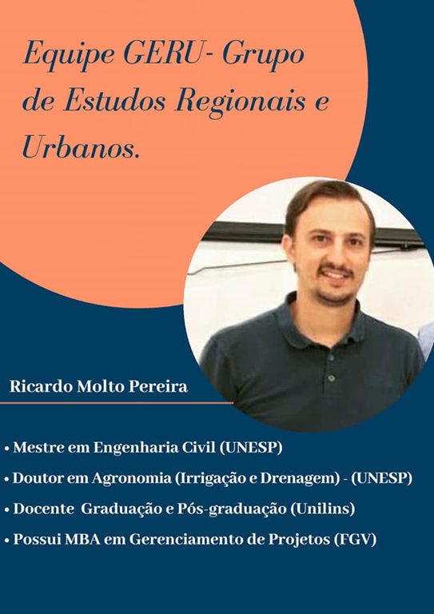

Ricardo Molto Pereira possui graduação em Engenharia Civil pela Universidade Estadual Paulista Júlio de Mesquita Filho (2006), mestrado em Engenharia Civil pela Universidade Estadual Paulista Júlio de Mesquita Filho (2008) e doutorado em Agronomia (Irrigacao e Drenagem) pela Universidade Estadual Paulista Júlio de Mesquita Filho (2013). Possui MBA em Gerenciamento de Projetos pela FGV. Entre 2008-2018 foi diretor de desenvolvimento de projetos - INOVATEC Saneamento e Meio Ambiente Ltda. Atualmente atua como consultor e projetista da MOLTO Engenharia, é docente da Fundação Paulista de Tecnologia e Educação onde coordenou os cursos de graduação em Engenharia Civil; Engenharia Ambiental e Sanitária. Atuou também como coordenador dos cursos de pós-graduação em Saneamento e Meio Ambiente e em Engenharia de Estruturas na Unilins. Foi docente da pós-graduação da Unitoledo. Atualmente é docente e coordenador da Engenharia Civil da FIB Bauru. Tem experiência na área de Engenharia Sanitária, com ênfase em estudo de técnicas de tratamento de águas residuárias em Wetlands. Atuou como professor substituto do Departamento de Engenharia Civil e Ambiental da Unesp-Bauru nos anos de 2009,2010,2020,2021,2022 e 2023. Atualmente faz parte do Grupo de Estudos Regionais Urbanos - GERU, entre as universidades UNEB, Universidade de Lisboa e Unilins. Faz parte também como coordenador do Grupo de estudos em tratamento de superfícies de parques solares P&D AES Anel Unilins, um projeto no qual fazem parte empresas privadas e instituições de ensino e pesquisa.